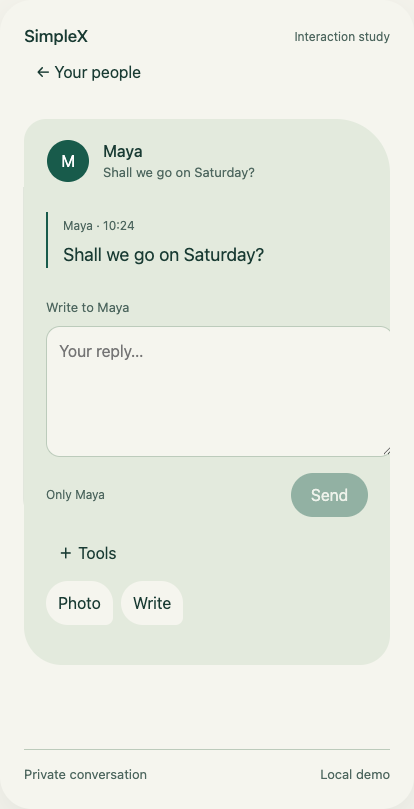
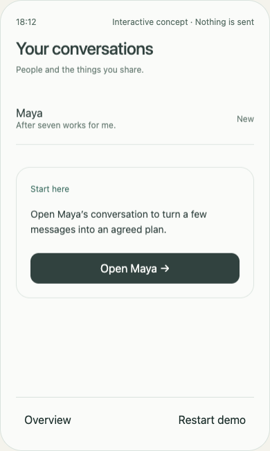

OPENING STUDY / YOUR SCREENSHOT
Your people
Touch Maya. Write a draft. Return and reopen the same conversation. This is the original simple opening-and-closing study.
Open this concept
Start with this model. Then explore the working interactions and every visual iteration, including the earlier attempts that led to it.
Four working studies and nine visual boards from our exploration of mobile design for simplex.chat.
Earlier directions remain visible so contributors can understand how the thinking evolved. They are experiments to question and build on.
Touch Maya. Write a draft. Return and reopen the same conversation. This is the original simple opening-and-closing study.
Open this concept
The same surface adds photo selection, a review before sending and a reply attached to a point in the image.
Try photo interactions
Follow source messages into a dinner proposal, invite Alex and set a simulated reminder.
Historical shortcut: this study simulates recipient acceptance automatically. The combined experience separates joining and agreement.
Explore the early flow
Messaging, photographs, explicit invitations, separate date decisions, source return and a labelled email scenario.
Open combined experienceAll sending, agreement and invitation acceptance are local simulations. Each study has Light, Dark and System appearance choices. Sources are in prototypes/src.
The anatomy board opens the explanation above. The nine-board record below preserves creation order, with the question, critique and next step at every stage. AI-generated visual studies can contain inconsistencies; they are direction-setting references.
Question: Could we reduce attention pressure?
Response: Prioritised replies, grouped spaces and previews.
Critique: The appearance changed more than the interaction model.
Next: Simplify the structure and remove visual ego.

Question: What does organised and clean mean?
Response: Quiet typography, open space and clearer grouping.
Critique: Still a familiar messaging model.
Next: Look outside the standard model and learn from nature.

Question: Can nature change the organisation?
Response: Shorelines for attention, branches for topics, gathering around an object.
Critique: No single anatomical model unified the experience.
Next: Explore octopus flexibility, local sensing and selective visibility.

Question: Can capability appear where we touch?
Response: A conversation unfolds locally, then returns to the overview.
Critique: The anatomical connection was still too hard to see.
Next: Translate centre, arms and contact points explicitly.

Question: How can anatomy become interface?
Response: A coordinating anchor, branching relationships and local touch points.
Critique: Eight branches are a constraint, not a rule; scale remains unproven.
Next: Follow the whole journey.
Question: Does the idea cover the entire flow?
Response: Invites, messages, photos, anchored replies and a plan.
Critique: The sequence still relied on conventional separate screens.
Next: Explore continuous form and movement.

Question: Can the surface reach, unfold and settle?
Response: A sculptural membrane changes around the activity.
Critique: Navigation, thumb reach and the behaviour behind the shape need testing.
Next: Map five predictions to concrete designs.

Question: How does each prediction become a design?
Response: Five behaviours share one visual family.
Critique: Curves need useful jobs; invitation and participant cues need correction.
Next: Connect the behaviours through one story.

Question: Can the relationship persist through the story?
Response: Invite, accept, write, choose, send, touch, gather and return.
Critique: The screens still need continuity beyond their appearance.
Next: Build opening and closing, then photo and sharing interactions.